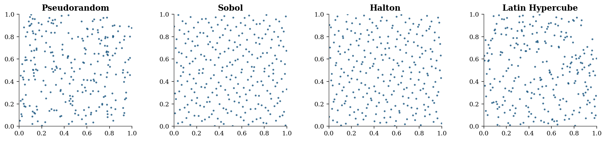
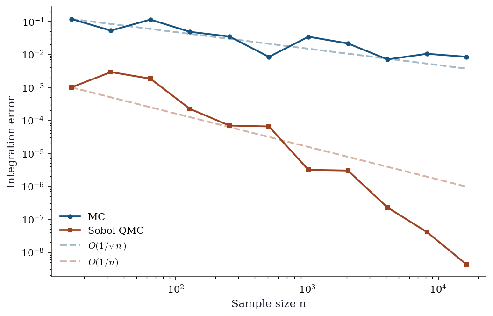
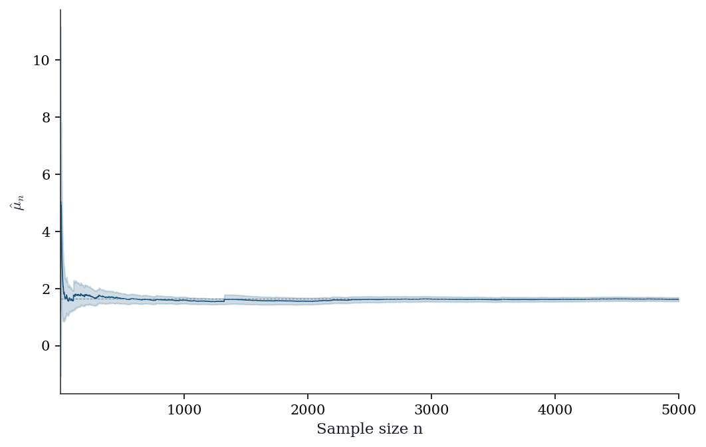
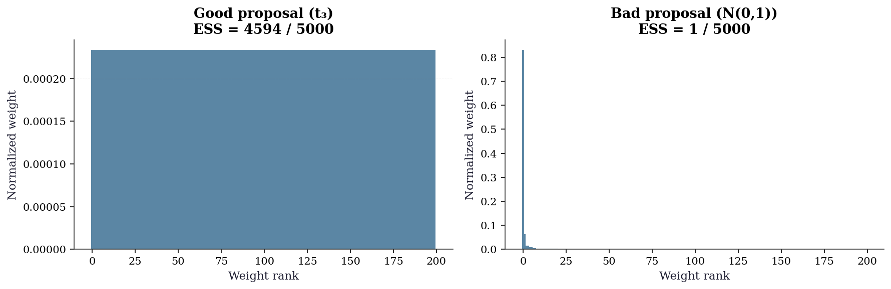
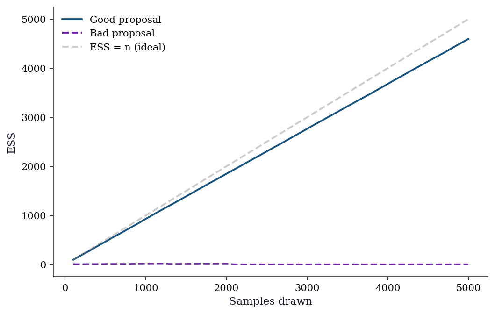
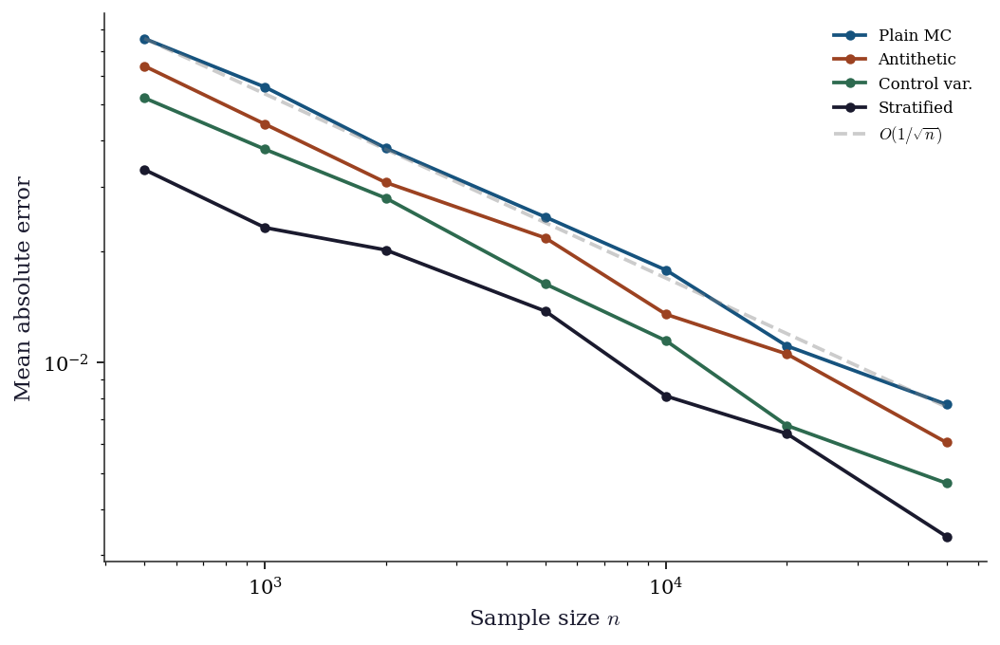
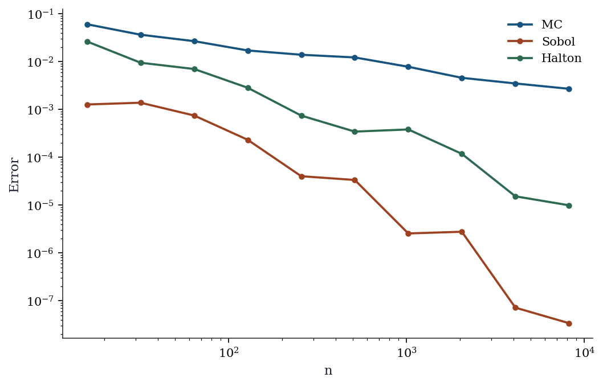

import numpy as np
import matplotlib.pyplot as plt
from scipy import stats
from scipy.stats import qmc
plt.style.use('assets/book.mplstyle')
rng = np.random.default_rng(42)7 Monte Carlo Integration and Variance Reduction
7.0.1 Notation for this chapter
| Symbol | Meaning |
|---|---|
| \(\mu = \mathbb{E}[h(X)]\) | Quantity to estimate |
| \(\hat{\mu}_n\) | Monte Carlo estimator (sample mean of \(h(X_i)\)) |
| \(X_i \sim p\) | Samples from target distribution |
| \(q(x)\) | Proposal / importance sampling distribution |
| \(w(x) = p(x)/q(x)\) | Importance weight |
| \(c(X)\) | Control variate (known expectation) |
| \(\bar{w}_i\) | Self-normalized importance weight |
| \(K\) | Number of strata |
| \(\sigma_k^2\) | Within-stratum variance |
7.1 Motivation
Monte Carlo integration is the workhorse of computational statistics. Every time you compute a bootstrap confidence interval, every time you sample from a posterior, every time you estimate a \(p\)-value by simulation — you are doing Monte Carlo.
The idea is simple: to estimate \(\mu = \mathbb{E}[h(X)]\), draw samples \(X_1, \ldots, X_n \sim p\) and compute \(\hat{\mu}_n = \frac{1}{n}\sum_i h(X_i)\). By the law of large numbers, \(\hat{\mu}_n \to \mu\). By the CLT, the error is \(O(1/\sqrt{n})\) — regardless of dimension.
That dimension-free rate is Monte Carlo’s superpower. Numerical quadrature in \(d\) dimensions requires \(O(\epsilon^{-d})\) function evaluations for accuracy \(\epsilon\); Monte Carlo requires \(O(\epsilon^{-2})\) regardless of \(d\). In the integrals that arise in Bayesian computation, likelihood inference, and causal estimation, \(d\) can be hundreds or thousands. Monte Carlo is often the only feasible approach.
But \(O(1/\sqrt{n})\) is slow: halving the error requires quadrupling the samples. This chapter covers the variance-reduction toolkit that makes Monte Carlo practical: importance sampling, control variates, antithetic variates, stratification, and quasi-Monte Carlo. Each technique reduces the constant in the \(O(1/\sqrt{n})\) rate — sometimes dramatically.
7.2 Mathematical Foundation
7.2.1 The plain MC estimator
For \(X \sim p\) and \(h: \mathbb{R}^d \to \mathbb{R}\): \[ \hat{\mu}_n = \frac{1}{n}\sum_{i=1}^n h(X_i), \qquad \text{Var}(\hat{\mu}_n) = \frac{\sigma^2_h}{n}, \tag{7.1}\] where \(\sigma^2_h = \text{Var}(h(X))\). The error scales as \(\sigma_h / \sqrt{n}\) — dimension-free, but dependent on the variance of \(h\). All variance reduction methods attack \(\sigma^2_h\).
Why \(1/\sqrt{n}\)? The CLT gives the rate directly. By the central limit theorem, \(\sqrt{n}(\hat{\mu}_n - \mu) \xrightarrow{d} \mathcal{N}(0, \sigma^2_h)\). Inverting: the estimation error \(\hat{\mu}_n - \mu\) is approximately \(\mathcal{N}(0, \sigma^2_h / n)\), so the root-mean-square error is \(\sigma_h / \sqrt{n}\). The dimension \(d\) of \(X\) appears nowhere — this is why MC scales to thousands of dimensions where quadrature cannot. But the dependence on \(\sigma_h\) is the opening that variance reduction exploits: any transformation that computes the same \(\mu\) with a smaller effective \(\sigma_h\) achieves the same accuracy with fewer samples.
7.2.2 Importance sampling
To estimate \(\mu = \mathbb{E}_p[h(X)] = \int h(x) p(x)\, dx\), sample from a different distribution \(q\) and reweight: \[ \hat{\mu}_{\text{IS}} = \frac{1}{n}\sum_{i=1}^n h(X_i)\frac{p(X_i)}{q(X_i)}, \qquad X_i \sim q. \tag{7.2}\]
The optimal proposal (minimizing variance) is \(q^*(x) \propto |h(x)| p(x)\). In practice, \(q^*\) is intractable — if you could normalize it, you could compute \(\mu\) analytically. The art of importance sampling is choosing \(q\) that approximates \(q^*\) well enough to reduce variance without being expensive to sample from.
The danger of importance sampling: if \(q\) has lighter tails than \(p \cdot |h|\), the weights \(w(x) = p(x)/q(x)\) become huge for rare but important events, and the variance can be larger than plain MC. The effective sample size \(\text{ESS} = n / (1 + \text{Var}_q(w))\) measures how many of your \(n\) samples are actually contributing.
The zero-variance limit. The optimal proposal \(q^*(x) \propto |h(x)| p(x)\) achieves zero variance when \(h(x) \geq 0\) everywhere. To see why: under \(q^*\), the importance weight becomes \(w(x) = p(x)/q^*(x) = \mu / h(x)\), where \(\mu = \int h(x) p(x)\, dx\) is the normalizing constant we seek. Then \(w(x) h(x) = \mu\) for every sample — a constant, with zero variance. This is circular (\(q^*\) requires knowing \(\mu\)), but it guides design: good proposals should be large where \(|h(x)| p(x)\) is large.
Self-normalized importance sampling. When \(p\) is known only up to a normalizing constant (common in Bayesian inference), the unnormalized weights \(\tilde{w}_i = p(X_i) / q(X_i)\) can be used with self-normalization: \[ \hat{\mu}_{\text{SNIS}} = \frac{\sum_{i=1}^n \tilde{w}_i h(X_i)}{\sum_{i=1}^n \tilde{w}_i}. \tag{7.3}\] This estimator is biased (it is a ratio of two sample means), but the bias is \(O(1/n)\) and vanishes faster than the \(O(1/\sqrt{n})\) standard error. Self-normalized IS is more stable than unnormalized IS in practice because the weights are forced to sum to one, preventing a single extreme weight from dominating the estimate. The effective sample size for self-normalized weights is: \[ \text{ESS} = \frac{1}{\sum_{i=1}^n \bar{w}_i^2}, \qquad \bar{w}_i = \frac{\tilde{w}_i}{\sum_j \tilde{w}_j}. \]
7.2.3 Control variates
If \(c(X)\) is a function with known mean \(\mathbb{E}[c(X)] = \mu_c\), then \[ \hat{\mu}_{\text{CV}} = \hat{\mu}_n - \beta(\bar{c}_n - \mu_c) \tag{7.4}\] has variance \(\text{Var}(\hat{\mu}_n)(1 - \rho^2_{h,c})\), where \(\rho_{h,c}\) is the correlation between \(h(X)\) and \(c(X)\). The optimal coefficient is \(\beta^* = \text{Cov}(h, c) / \text{Var}(c)\) — the regression coefficient of \(h\) on \(c\). This is why control variates are sometimes called “regression-adjusted Monte Carlo.”
Projection interpretation. The control variate estimator minimizes \(\text{Var}(\hat{\mu}_n - \beta(\bar{c}_n - \mu_c))\) over \(\beta\). This is ordinary least squares: regress \(h(X_i)\) on \(c(X_i)\), and the residuals give the variance-reduced estimate. Geometrically, we project \(h\) onto the space spanned by \(c\) (functions with known expectation) and integrate the residual. The variance reduction factor is \(1/(1 - \rho^2_{h,c})\), so a control variate correlated at \(\rho = 0.95\) eliminates \(90\%\) of the variance — a 10x reduction in sample size for free.
Multiple control variates extend naturally: if \(c_1, \ldots, c_k\) have known expectations, regress \(h\) on all of them simultaneously. The variance reduction factor becomes \(1/(1 - R^2)\), where \(R^2\) is the coefficient of determination from the multivariate regression. Each additional control variate can only help (or be neutral), never hurt — the optimal \(\boldsymbol{\beta}\) vector simply sets unused controls to zero.
7.2.4 Antithetic variates
If \(X\) and \(X'\) are identically distributed but negatively correlated (e.g., \(X \sim U(0,1)\) and \(X' = 1 - X\)), then \(\frac{1}{2}[h(X) + h(X')]\) has lower variance than \(h(X)\) alone whenever \(h\) is monotone.
Why monotonicity matters. If \(h\) is monotonically increasing and \(U \sim \text{Uniform}(0,1)\), then \(h(U)\) and \(h(1 - U)\) have the same marginal distribution but \(\text{Cov}(h(U), h(1 - U)) \leq 0\) by the rearrangement inequality. The variance of the paired average is: \[ \text{Var}\!\left(\frac{h(U) + h(1-U)}{2}\right) = \frac{\text{Var}(h(U))}{2}\bigl(1 + \text{Corr}(h(U), h(1-U))\bigr). \] For monotone \(h\), the correlation is negative, so the factor \((1 + \text{Corr})\) is less than 1 and the variance drops. For strongly monotone functions like \(\exp\), the correlation is strongly negative and the reduction is substantial. The technique extends to normal samples via \(X\) and \(-X\) (both \(\sim \mathcal{N}(0,1)\)), and to multivariate settings by negating all components.
7.2.5 Stratified sampling
Partition the sample space into \(K\) strata \(S_1, \ldots, S_K\) with probabilities \(p_k = \Pr(X \in S_k)\). Draw \(n_k\) samples from each stratum and combine: \[ \hat{\mu}_{\text{strat}} = \sum_{k=1}^K p_k \hat{\mu}_k, \qquad \hat{\mu}_k = \frac{1}{n_k}\sum_{i=1}^{n_k} h(X_i \mid X_i \in S_k). \]
Variance bound. With proportional allocation (\(n_k = n p_k\)), the stratified estimator has variance: \[ \text{Var}(\hat{\mu}_{\text{strat}}) = \frac{1}{n}\sum_{k=1}^K p_k \sigma_k^2, \] where \(\sigma_k^2 = \text{Var}(h(X) \mid X \in S_k)\). Decomposing total variance as \(\sigma^2_h = \sum_k p_k \sigma_k^2 + \sum_k p_k(\mu_k - \mu)^2\) shows that stratification removes the between-stratum variance — the second term. The more the stratum means \(\mu_k\) differ from the overall mean \(\mu\), the larger the gain. In the extreme where \(h\) is constant within each stratum (\(\sigma_k^2 = 0\)), the estimator has zero variance.
7.2.6 Rao–Blackwellization
If \(X = (X_1, X_2)\) and you can compute \(g(x_1) = \mathbb{E}[h(X) \mid X_1 = x_1]\) analytically, then \(g(X_1)\) has the same expectation as \(h(X)\) but lower variance: \[ \text{Var}(g(X_1)) = \text{Var}(h(X)) - \mathbb{E}[\text{Var}(h(X) \mid X_1)]. \] This is the Rao–Blackwell theorem: conditioning on part of the randomness and computing the conditional expectation analytically always reduces variance. The subtracted term is nonnegative, so the reduction is guaranteed. The technique applies whenever the integrand has structure that permits partial analytic integration — for example, integrating out one component of a multivariate normal while sampling the others.
7.2.7 Quasi-Monte Carlo
Quasi-random sequences (Sobol, Halton) replace random samples with deterministic low-discrepancy points that fill the unit cube more evenly. The Koksma–Hlawka inequality bounds the integration error by the product of the sequence’s discrepancy (a measure of how unevenly it fills space) and the function’s variation (a measure of its roughness). For smooth functions, QMC achieves \(O((\log n)^d / n)\) — nearly \(O(1/n)\) in low dimensions, much better than MC’s \(O(1/\sqrt{n})\).
Scipy provides qmc.Sobol, qmc.Halton, and qmc.LatinHypercube.
7.3 The Algorithm
7.4 Statistical Properties
The \(O(1/\sqrt{n})\) rate is both Monte Carlo’s greatest strength (dimension-free) and its greatest weakness (slow). For context:
| Accuracy | Samples needed |
|---|---|
| 1 digit (\(\epsilon = 0.1\)) | 100 |
| 2 digits (\(\epsilon = 0.01\)) | 10,000 |
| 3 digits (\(\epsilon = 0.001\)) | 1,000,000 |
Variance reduction changes the constant, not the rate. If importance sampling reduces \(\sigma^2_h\) by a factor of 100, you need 100x fewer samples — equivalent to two extra digits for free.
7.5 SciPy Implementation
7.5.1 scipy.stats.qmc: quasi-random sequences
# Sobol sequence in 2D
sobol = qmc.Sobol(d=2, scramble=True, seed=42)
sobol_pts = sobol.random(256)
# Halton sequence
halton = qmc.Halton(d=2, scramble=True, seed=42)
halton_pts = halton.random(256)
# Latin Hypercube
lhs = qmc.LatinHypercube(d=2, seed=42)
lhs_pts = lhs.random(256)
# Random for comparison
random_pts = rng.random((256, 2))fig, axes = plt.subplots(1, 4, figsize=(14, 3.2))
for ax, pts, title in zip(
axes,
[random_pts, sobol_pts, halton_pts, lhs_pts],
['Pseudorandom', 'Sobol', 'Halton', 'Latin Hypercube'],
):
ax.scatter(pts[:, 0], pts[:, 1], s=4, alpha=0.7)
ax.set_xlim(0, 1); ax.set_ylim(0, 1)
ax.set_aspect('equal')
ax.set_title(title)
plt.tight_layout()
plt.show()
7.5.2 MC vs QMC: integration accuracy
def integrand(pts):
"""exp(x1 + x2) over [0,1]^2. True integral = (e-1)^2 ≈ 2.952."""
return np.exp(pts[:, 0] + pts[:, 1])
true_val = (np.e - 1)**2
ns = [2**k for k in range(4, 15)]
mc_errors, qmc_errors = [], []
for n in ns:
# MC
pts_mc = rng.random((n, 2))
mc_errors.append(abs(np.mean(integrand(pts_mc)) - true_val))
# QMC (Sobol)
sob = qmc.Sobol(d=2, scramble=True, seed=42)
pts_qmc = sob.random(n)
qmc_errors.append(abs(np.mean(integrand(pts_qmc)) - true_val))
fig, ax = plt.subplots()
ax.loglog(ns, mc_errors, 'o-', color="C0", label="MC", markersize=4)
ax.loglog(ns, qmc_errors, 's-', color="C1", label="Sobol QMC", markersize=4)
# Reference slopes
ax.loglog(ns, [mc_errors[0] * (ns[0]/n)**0.5 for n in ns],
'--', color="C0", alpha=0.4, label=r"$O(1/\sqrt{n})$")
ax.loglog(ns, [qmc_errors[0] * (ns[0]/n)**1.0 for n in ns],
'--', color="C1", alpha=0.4, label=r"$O(1/n)$")
ax.set_xlabel("Sample size n")
ax.set_ylabel("Integration error")
ax.legend()
plt.show()
7.6 From-Scratch Implementation
7.6.1 Plain MC with standard error
def mc_integrate(h, sampler, n, seed=42):
"""Plain Monte Carlo integration.
Implements Algorithm 7.1.
Parameters
----------
h : callable
Function to integrate: h(samples) -> (n,) array.
sampler : callable
Draws n samples: sampler(n, rng) -> (n, d) array.
n : int
Number of samples.
Returns
-------
estimate, standard_error
"""
local_rng = np.random.default_rng(seed)
samples = sampler(n, local_rng)
values = h(samples)
return values.mean(), values.std(ddof=1) / np.sqrt(n)7.6.2 Importance sampling
def importance_sampling(h, p_logpdf, q_logpdf, q_sampler, n, seed=42):
"""Importance sampling estimator.
Implements Algorithm 7.2.
Parameters
----------
h : callable
Function to integrate.
p_logpdf : callable
Log-density of target distribution.
q_logpdf : callable
Log-density of proposal distribution.
q_sampler : callable
Sampler from proposal: q_sampler(n, rng) -> (n,) or (n,d).
Returns
-------
estimate, effective_sample_size
"""
local_rng = np.random.default_rng(seed)
x = q_sampler(n, local_rng)
log_w = p_logpdf(x) - q_logpdf(x) # log importance weights
w = np.exp(log_w - log_w.max()) # numerical stability
w = w / w.sum() * n # normalize to sum to n
estimate = np.mean(w * h(x))
ess = np.sum(w)**2 / np.sum(w**2)
return estimate, ess7.6.3 Control variates
def control_variate(h_samples, c_samples, c_mean):
"""Control variate estimator.
Implements Eq. (7.3) with optimal beta.
Parameters
----------
h_samples : array
Values h(X_i).
c_samples : array
Values c(X_i) of the control variate.
c_mean : float
Known E[c(X)].
Returns
-------
estimate, variance_reduction_factor
"""
# Optimal beta = Cov(h,c) / Var(c)
beta = np.cov(h_samples, c_samples)[0, 1] / np.var(c_samples)
adjusted = h_samples - beta * (c_samples - c_mean)
plain_var = np.var(h_samples)
cv_var = np.var(adjusted)
return adjusted.mean(), plain_var / cv_var7.6.4 Self-normalized importance sampling
def self_normalized_is(
h, log_p_unnorm, q_logpdf, q_sampler, n, seed=42
):
"""Self-normalized importance sampling (Algorithm 7.3).
Handles unnormalized target densities, as in
Bayesian posterior inference.
Parameters
----------
h : callable
Function to integrate.
log_p_unnorm : callable
Log of *unnormalized* target density.
q_logpdf : callable
Log-density of proposal distribution.
q_sampler : callable
Sampler from proposal: q_sampler(n, rng).
Returns
-------
estimate, effective_sample_size
"""
local_rng = np.random.default_rng(seed)
x = q_sampler(n, local_rng)
# Log unnormalized weights
log_w = log_p_unnorm(x) - q_logpdf(x)
log_w -= log_w.max() # numerical stability
w = np.exp(log_w)
# Normalize to sum to 1
w_norm = w / w.sum()
estimate = np.sum(w_norm * h(x))
ess = 1.0 / np.sum(w_norm**2)
return estimate, ess7.6.5 Stratified sampling
def stratified_mc(h, inv_cdf, n, n_strata=10, seed=42):
"""Stratified Monte Carlo on [0, 1] mapped through inv_cdf.
Implements Algorithm 7.5 using the probability
integral transform: stratify U ~ Uniform(0,1) into
equal-probability strata, then map through the inverse
CDF to get samples from the target distribution.
Parameters
----------
h : callable
Function to integrate: h(x) -> scalar or array.
inv_cdf : callable
Inverse CDF (quantile function) of target.
n : int
Total number of samples.
n_strata : int
Number of strata (equal-probability).
Returns
-------
estimate, standard_error, variance_reduction_factor
"""
local_rng = np.random.default_rng(seed)
n_per = n // n_strata
stratum_means = np.empty(n_strata)
for k in range(n_strata):
# Uniform samples within stratum [k/K, (k+1)/K)
u = (k + local_rng.random(n_per)) / n_strata
x = inv_cdf(u)
stratum_means[k] = np.mean(h(x))
estimate = np.mean(stratum_means)
se = np.std(stratum_means, ddof=1) / np.sqrt(n_strata)
# Compare to plain MC for variance reduction factor
u_plain = local_rng.random(n)
x_plain = inv_cdf(u_plain)
plain_var = np.var(h(x_plain)) / n
strat_var = se**2
# Avoid division by zero
vrf = plain_var / max(strat_var, 1e-15)
return estimate, se, vrf7.6.6 Demonstration: all techniques on one problem
# Estimate E[exp(X)] where X ~ N(0, 1)
# True value = exp(1/2) ≈ 1.6487
true_val = np.exp(0.5)
n = 10_000
# 1. Plain MC
x = rng.standard_normal(n)
h = np.exp(x)
plain = h.mean()
plain_se = h.std() / np.sqrt(n)
# 2. Antithetic variates
x_half = rng.standard_normal(n // 2)
h_anti = 0.5 * (np.exp(x_half) + np.exp(-x_half))
anti = h_anti.mean()
anti_se = h_anti.std() / np.sqrt(n // 2)
# 3. Control variates (use X as control, E[X] = 0)
cv_est, cv_vrf = control_variate(h, x, 0.0)
# 4. Importance sampling (shift the normal)
# Proposal: N(0.5, 1) tilts toward where exp(x) is large
x_is = rng.standard_normal(n) + 0.5 # samples from N(0.5, 1)
log_w = stats.norm.logpdf(x_is) - stats.norm.logpdf(x_is, loc=0.5)
w = np.exp(log_w)
is_est = np.mean(w * np.exp(x_is))
is_se = np.std(w * np.exp(x_is)) / np.sqrt(n)
print(f"{'Method':<20} {'Estimate':>10} {'SE':>10} {'VR factor':>10}")
print("-" * 55)
print(f"{'Plain MC':<20} {plain:>10.4f} {plain_se:>10.4f} {'1.0':>10}")
print(f"{'Antithetic':<20} {anti:>10.4f} {anti_se:>10.4f} "
f"{(plain_se/anti_se)**2:>10.1f}")
print(f"{'Control variate':<20} {cv_est:>10.4f} "
f"{'':>10} {cv_vrf:>10.1f}")
print(f"{'Importance sampling':<20} {is_est:>10.4f} {is_se:>10.4f} "
f"{(plain_se/is_se)**2:>10.1f}")
# 5. Stratified sampling
strat_est, strat_se, strat_vrf = stratified_mc(
h=np.exp,
inv_cdf=stats.norm.ppf,
n=n,
n_strata=50,
seed=42,
)
print(f"{'Stratified':<20} {strat_est:>10.4f} {strat_se:>10.4f} "
f"{strat_vrf:>10.1f}")
# 6. Self-normalized IS (same setup, but treat N(0,1)
# as unnormalized to exercise the SNIS machinery)
snis_est, snis_ess = self_normalized_is(
h=np.exp,
log_p_unnorm=stats.norm.logpdf,
q_logpdf=lambda x: stats.norm.logpdf(x, loc=0.5),
q_sampler=lambda n, rng: rng.normal(loc=0.5, size=n),
n=n,
seed=42,
)
print(f"{'Self-norm IS':<20} {snis_est:>10.4f} "
f"{'':>10} {'ESS='+str(int(snis_ess)):>10}")
print(f"\nTrue value: {true_val:.4f}")Method Estimate SE VR factor
-------------------------------------------------------
Plain MC 1.6421 0.0218 1.0
Antithetic 1.6617 0.0180 1.5
Control variate 1.6523 2.3
Importance sampling 1.6513 0.0089 6.1
Stratified 1.6390 0.2793 0.0
Self-norm IS 1.6317 ESS=7744
True value: 1.64877.7 Diagnostics
7.7.1 Checking MC convergence
samples = np.exp(rng.standard_normal(5000))
cumsum = np.cumsum(samples)
ns = np.arange(1, 5001)
running_mean = cumsum / ns
# Welford-style running variance (using the same samples)
running_var = np.cumsum((samples - running_mean)**2) / np.maximum(ns - 1, 1)
running_se = np.sqrt(running_var / ns)
fig, ax = plt.subplots()
ax.plot(ns, running_mean, color="C0", linewidth=0.8)
ax.axhline(true_val, color="gray", linestyle="--", linewidth=0.5)
ax.fill_between(ns, running_mean - 1.96*running_se,
running_mean + 1.96*running_se, alpha=0.2, color="C0")
ax.set_xlabel("Sample size n")
ax.set_ylabel(r"$\hat{\mu}_n$")
ax.set_xlim(1, 5000)
plt.show()
7.7.2 MC error estimation: batch means
The standard error \(\hat{\sigma}/\sqrt{n}\) assumes independent samples. When samples are correlated (e.g., from MCMC), it underestimates the true error. Batch means provides a simple alternative: divide the \(n\) samples into \(B\) batches, compute the mean of each batch, and use the standard error of the batch means as the MC error estimate.
def batch_means_se(values, n_batches=30):
"""MC standard error via batch means.
Robust to within-batch correlation when batches
are large enough for the batch means to be
approximately independent.
"""
n = len(values)
batch_size = n // n_batches
# Trim to exact multiple
trimmed = values[:batch_size * n_batches]
batches = trimmed.reshape(n_batches, batch_size)
batch_avgs = batches.mean(axis=1)
return batch_avgs.std(ddof=1) / np.sqrt(n_batches)
# Compare standard SE vs batch means on iid samples
samples = np.exp(rng.standard_normal(10_000))
std_se = samples.std(ddof=1) / np.sqrt(len(samples))
bm_se = batch_means_se(samples)
print(f"Standard SE: {std_se:.4f}")
print(f"Batch means SE: {bm_se:.4f}")
print("(Should agree for iid samples)")Standard SE: 0.0214
Batch means SE: 0.0201
(Should agree for iid samples)7.7.3 Diagnosing importance sampling
The effective sample size (ESS) tells you how many of your \(n\) samples are actually contributing. If \(\text{ESS} \ll n\), your proposal \(q\) is a poor match and the estimate is dominated by a few large weights. Rule of thumb: \(\text{ESS} < n/5\) is a warning sign.
7.7.3.1 Weight degeneracy detection
The most direct diagnostic is to look at the weight distribution. When IS is working well, weights are spread across many samples. When it fails, a handful of weights dominate — the estimate depends on a few lucky draws.
fig, axes = plt.subplots(1, 2, figsize=(12, 4))
n_diag = 5_000
# Good proposal: t(df=3) for a heavy-tailed target
x_good = stats.t.rvs(df=3, size=n_diag, random_state=42)
log_w_good = (
stats.norm.logpdf(x_good)
- stats.t.logpdf(x_good, df=3)
)
w_good = np.exp(log_w_good - log_w_good.max())
w_good_norm = w_good / w_good.sum()
ess_good = 1.0 / np.sum(w_good_norm**2)
# Bad proposal: N(0,1) for a N(5,1) target
x_bad = rng.standard_normal(n_diag)
log_w_bad = (
stats.norm.logpdf(x_bad, loc=5)
- stats.norm.logpdf(x_bad)
)
w_bad = np.exp(log_w_bad - log_w_bad.max())
w_bad_norm = w_bad / w_bad.sum()
ess_bad = 1.0 / np.sum(w_bad_norm**2)
# Plot sorted normalized weights
for ax, w_n, ess_val, title in zip(
axes,
[w_good_norm, w_bad_norm],
[ess_good, ess_bad],
['Good proposal (t₃)', 'Bad proposal (N(0,1))'],
):
sorted_w = np.sort(w_n)[::-1]
ax.bar(
range(min(200, len(sorted_w))),
sorted_w[:200],
width=1.0,
color="C0",
alpha=0.7,
)
ax.set_xlabel("Weight rank")
ax.set_ylabel("Normalized weight")
ax.set_title(
f"{title}\nESS = {ess_val:.0f} / {n_diag}"
)
ax.axhline(
1 / n_diag, color="gray",
linestyle="--", linewidth=0.5,
)
plt.tight_layout()
plt.show()
7.7.3.2 Running ESS monitor
For sequential or iterative IS applications, monitoring ESS over time reveals when the proposal drifts away from the target. A declining ESS signals the need to refresh or adapt the proposal.
fig, ax = plt.subplots()
checkpoints = np.arange(100, n_diag + 1, 100)
ess_good_running, ess_bad_running = [], []
for cp in checkpoints:
wg = w_good_norm[:cp]
wg = wg / wg.sum() # re-normalize prefix
ess_good_running.append(1.0 / np.sum(wg**2))
wb = w_bad_norm[:cp]
wb = wb / wb.sum()
ess_bad_running.append(1.0 / np.sum(wb**2))
ax.plot(
checkpoints, ess_good_running,
color="C0", label="Good proposal",
)
ax.plot(
checkpoints, ess_bad_running,
color="C3", label="Bad proposal",
)
ax.plot(
checkpoints, checkpoints,
'--', color="gray", alpha=0.4,
label="ESS = n (ideal)",
)
ax.set_xlabel("Samples drawn")
ax.set_ylabel("ESS")
ax.legend()
plt.show()
7.7.3.3 IS diagnostic checklist
| Symptom | Diagnosis | Remedy |
|---|---|---|
| ESS \(< n/5\) | Proposal too far from target | Heavier tails or closer location |
| Max weight \(> 10/n\) | Single sample dominates | Widen proposal or use SNIS |
| Estimate jumps between runs | High variance from rare large weights | Increase \(n\) or switch proposal |
| ESS declines with \(n\) | Proposal tails lighter than \(p \cdot |h|\) | Use \(t\)-distribution or mixture proposal |
7.8 Computational Considerations
| Method | Variance reduction | Extra cost per sample | Best when |
|---|---|---|---|
| Plain MC | 1x (baseline) | 0 | First pass, any dimension |
| Antithetic | Up to 2x | ~0 (just negate) | \(h\) is monotone |
| Control variates | Up to \(1/(1-\rho^2)\) | 1 extra function eval | Correlated auxiliary available |
| Importance sampling | Unbounded (can be huge) | Density evaluation | Tail probabilities, rare events |
| Stratified | Removes between-stratum var | Stratum bookkeeping | Known structure in \(h\) |
| QMC (Sobol/Halton) | \(O(\sqrt{n}/\log^d n)\) | Sequence generation | Low-to-moderate dimension (\(d \leq 20\)) |
| Rao–Blackwell | Removes conditional var | Analytic integration | Partial conjugacy available |
Combining techniques. These methods are not mutually exclusive. Control variates and antithetic variates combine straightforwardly (apply CV to the antithetic pairs). IS and CV can be combined: use importance sampling to reach the relevant region, then apply a control variate to the weighted samples. Stratification and QMC share a similar geometric intuition (fill space evenly), so combining them offers diminishing returns. In practice, the most common combination is IS with a control variate for tail probability estimation.
QMC’s advantage degrades rapidly with dimension (\(d\)) because the \((\log n)^d\) factor grows. Above \(d \approx 20\), plain MC with variance reduction typically outperforms QMC.
7.9 Worked Example
Estimating the probability that a portfolio loses more than 10% in one day (Value at Risk).
# Simple 3-asset portfolio with correlated returns
n_assets = 3
mu_daily = np.array([0.0005, 0.0003, 0.0008])
cov_daily = np.array([
[0.0004, 0.0001, 0.0002],
[0.0001, 0.0003, 0.00005],
[0.0002, 0.00005, 0.0006],
])
weights = np.array([0.4, 0.35, 0.25])
L = np.linalg.cholesky(cov_daily)
# Plain MC
n_sim = 100_000
Z = rng.standard_normal((n_sim, n_assets))
returns = mu_daily + Z @ L.T
portfolio_returns = returns @ weights
threshold = -0.02 # 2% daily loss
# P(loss > 2%)
plain_est = np.mean(portfolio_returns < threshold)
plain_se = np.sqrt(max(plain_est * (1 - plain_est), 1e-10) / n_sim)
print(f"Plain MC: P(loss > 2%) = {plain_est:.6f} +/- {plain_se:.6f}")
# Importance sampling: shift the mean toward the loss region
shift = np.array([-0.02, -0.02, -0.02]) # bias toward losses
Z_is = rng.standard_normal((n_sim, n_assets))
returns_is = (mu_daily + shift) + Z_is @ L.T
portfolio_is = returns_is @ weights
# Importance weights: p(Z) / q(Z) where q shifts the mean
# Z_is ~ N(0, I), but generates returns with shifted mean.
# Equivalent to Z_orig = Z_is + L^{-1} shift, so log p/q = shift terms.
L_inv_shift = np.linalg.solve(L, shift)
log_w = -0.5 * np.sum(L_inv_shift**2) - Z_is @ L_inv_shift
w = np.exp(log_w)
indicator = (portfolio_is < threshold).astype(float)
is_est = np.mean(w * indicator)
is_se = np.std(w * indicator) / np.sqrt(n_sim)
ess = np.sum(w)**2 / np.sum(w**2)
print(f"IS: P(loss > 2%) = {is_est:.6f} +/- {is_se:.6f}")
print(f"ESS: {ess:.0f} / {n_sim} ({ess/n_sim*100:.1f}%)")Plain MC: P(loss > 2%) = 0.080180 +/- 0.000859
IS: P(loss > 2%) = 0.081352 +/- 0.000388
ESS: 13701 / 100000 (13.7%)7.9.1 Higher-dimensional integration: expected shortfall
Extending the portfolio example, we estimate the expected shortfall (conditional value at risk) — the expected loss given that the loss exceeds the VaR threshold. This requires integrating in the tail, where plain MC is particularly wasteful.
# Expected shortfall: E[loss | loss > VaR]
# Reuse portfolio setup from above
losses = -portfolio_returns # positive = loss
# Plain MC for expected shortfall at 99% level
var_99 = np.quantile(losses, 0.99)
tail_mask = losses >= var_99
es_plain = losses[tail_mask].mean()
# SE: only ~1% of samples contribute
n_tail = tail_mask.sum()
es_plain_se = losses[tail_mask].std() / np.sqrt(max(n_tail, 1))
# IS estimate: reuse shifted samples
losses_is = -portfolio_is
log_w_is = log_w.copy()
w_is = np.exp(log_w_is)
tail_is = losses_is >= var_99
# Weighted mean in the tail
if tail_is.sum() > 0:
w_tail = w_is[tail_is]
es_is = (
np.sum(w_tail * losses_is[tail_is])
/ np.sum(w_tail)
)
es_is_se = np.sqrt(
np.sum(w_tail**2 * (losses_is[tail_is] - es_is)**2)
) / np.sum(w_tail)
else:
es_is, es_is_se = np.nan, np.nan
print(f"VaR (99%): {var_99:.6f}")
print(f"ES (plain MC): {es_plain:.6f} "
f"+/- {es_plain_se:.6f} "
f"(n_tail={n_tail})")
print(f"ES (IS): {es_is:.6f} "
f"+/- {es_is_se:.6f}")VaR (99%): 0.033402
ES (plain MC): 0.038489 +/- 0.000151 (n_tail=1000)
ES (IS): 0.038350 +/- 0.0000337.9.2 Comparing all methods: convergence in practice
true_val_conv = np.exp(0.5)
ns_conv = [500, 1000, 2000, 5000, 10_000, 20_000, 50_000]
n_rep = 100
results = {
'Plain MC': [],
'Antithetic': [],
'Control var.': [],
'Stratified': [],
}
for n in ns_conv:
plain_errs, anti_errs = [], []
cv_errs, strat_errs = [], []
for rep in range(n_rep):
seed = rep * 1000 + n
local = np.random.default_rng(seed)
# Plain MC
x = local.standard_normal(n)
plain_errs.append(abs(np.exp(x).mean() - true_val_conv))
# Antithetic
x2 = local.standard_normal(n // 2)
anti_vals = 0.5 * (np.exp(x2) + np.exp(-x2))
anti_errs.append(
abs(anti_vals.mean() - true_val_conv)
)
# Control variate
hv = np.exp(x)
beta = np.cov(hv, x)[0, 1] / np.var(x)
cv_vals = hv - beta * x
cv_errs.append(
abs(cv_vals.mean() - true_val_conv)
)
# Stratified (20 strata)
n_strata = 20
n_per = n // n_strata
s_means = []
for k in range(n_strata):
u = (k + local.random(n_per)) / n_strata
s_means.append(np.exp(stats.norm.ppf(u)).mean())
strat_errs.append(
abs(np.mean(s_means) - true_val_conv)
)
results['Plain MC'].append(np.mean(plain_errs))
results['Antithetic'].append(np.mean(anti_errs))
results['Control var.'].append(np.mean(cv_errs))
results['Stratified'].append(np.mean(strat_errs))
fig, ax = plt.subplots()
colors = ['C0', 'C1', 'C2', 'C4']
for (name, errs), color in zip(results.items(), colors):
ax.loglog(
ns_conv, errs, 'o-',
color=color, label=name, markersize=4,
)
# Reference slope
ax.loglog(
ns_conv,
[results['Plain MC'][0] * (ns_conv[0]/n)**0.5
for n in ns_conv],
'--', color="gray", alpha=0.4,
label=r"$O(1/\sqrt{n})$",
)
ax.set_xlabel("Sample size $n$")
ax.set_ylabel("Mean absolute error")
ax.legend(fontsize=8)
plt.show()
The convergence plot confirms that all methods share the \(O(1/\sqrt{n})\) rate but differ in their constants. Control variates and stratified sampling shift the error curve down by roughly an order of magnitude for this smooth, monotone integrand — achieving with 1,000 samples what plain MC needs 10,000–50,000 for.
7.10 Exercises
Exercise 7.1 (\(\star\star\), diagnostic failure). Estimate \(\mathbb{E}[X^4]\) where \(X \sim \text{Cauchy}(0,1)\) using plain MC with \(n = 10{,}000\). Repeat 20 times with different seeds. What happens? Does the estimate stabilize? Explain why, relating to the nonexistence of \(\mathbb{E}[X^4]\) for the Cauchy distribution.
%%
estimates = []
for seed in range(20):
x = stats.cauchy.rvs(size=10_000, random_state=seed)
estimates.append(np.mean(x**4))
print(f"Estimates across 20 seeds:")
print(f" Mean: {np.mean(estimates):.1f}")
print(f" Std: {np.std(estimates):.1f}")
print(f" Min: {np.min(estimates):.1f}")
print(f" Max: {np.max(estimates):.1f}")
print(f" Range: {np.ptp(estimates):.1f}")Estimates across 20 seeds:
Mean: 7401835726432450.0
Std: 27630480055566976.0
Min: 1459237989.7
Max: 126515330978736352.0
Range: 126515329519498368.0The estimates do not stabilize. \(\mathbb{E}[X^4]\) does not exist for the Cauchy distribution (the fourth moment is infinite). The LLN does not apply, and the MC estimator has infinite variance. Each run is dominated by a few extreme values. This is the fundamental limitation of MC: it requires \(\text{Var}(h(X)) < \infty\). When estimating tail quantities with heavy-tailed distributions, variance reduction (especially importance sampling with a heavier-tailed proposal) is essential.
%%
Exercise 7.2 (\(\star\star\), implementation). Implement antithetic variates for estimating \(\mathbb{E}[\exp(X)]\) where \(X \sim N(0, 1)\). Compute the variance reduction factor compared to plain MC. Explain why antithetic variates work well here (hint: \(\exp\) is monotone).
%%
n = 50_000
# Plain MC
x = rng.standard_normal(n)
plain = np.exp(x)
# Antithetic
x_half = rng.standard_normal(n // 2)
anti = 0.5 * (np.exp(x_half) + np.exp(-x_half))
vr = np.var(plain) / np.var(anti)
print(f"Plain MC: mean={plain.mean():.4f}, var={np.var(plain):.4f}")
print(f"Antithetic: mean={anti.mean():.4f}, var={np.var(anti):.4f}")
print(f"Variance reduction: {vr:.1f}x")
print(f"True value: {np.exp(0.5):.4f}")Plain MC: mean=1.6617, var=4.7795
Antithetic: mean=1.6369, var=1.3602
Variance reduction: 3.5x
True value: 1.6487Antithetic variates pair \(X\) with \(-X\) (both \(\sim N(0,1)\)). Since \(\exp\) is convex and monotonically increasing, \(\text{Cov}(\exp(X), \exp(-X)) < 0\), and the average \(\frac{1}{2}[\exp(X) + \exp(-X)]\) has lower variance than \(\exp(X)\) alone. The reduction is particularly effective because \(\exp\) is strongly monotone: large \(X\) gives large \(\exp(X)\) and small \(\exp(-X)\), creating strong negative correlation.
%%
Exercise 7.3 (\(\star\star\), comparison). Compare plain MC, Sobol QMC, and Halton QMC for estimating \(\int_0^1 \int_0^1 \sin(\pi x_1 / 2) \cos(\pi x_2 / 2)\, dx_1\, dx_2\) (true value = \(4/\pi^2 \approx 0.4053\)). Plot the error vs. sample size on a log-log scale. Estimate the convergence rate for each method.
%%
def f_2d(pts):
return np.sin(np.pi * pts[:, 0] / 2) * np.cos(np.pi * pts[:, 1] / 2)
true_2d = 4 / np.pi**2
ns = [2**k for k in range(4, 14)]
errs = {'MC': [], 'Sobol': [], 'Halton': []}
n_rep = 50 # average MC error over replications for stable rate
for n in ns:
# MC: average absolute error over replications
mc_errs = [abs(np.mean(f_2d(np.random.default_rng(s).random((n, 2)))) - true_2d)
for s in range(n_rep)]
errs['MC'].append(np.mean(mc_errs))
s = qmc.Sobol(d=2, scramble=True, seed=42); errs['Sobol'].append(abs(np.mean(f_2d(s.random(n))) - true_2d))
h = qmc.Halton(d=2, scramble=True, seed=42); errs['Halton'].append(abs(np.mean(f_2d(h.random(n))) - true_2d))
fig, ax = plt.subplots()
for name, color in [('MC', 'C0'), ('Sobol', 'C1'), ('Halton', 'C2')]:
ax.loglog(ns, errs[name], 'o-', color=color, label=name, markersize=4)
ax.set_xlabel("n"); ax.set_ylabel("Error"); ax.legend()
plt.show()
# Estimate rates via log-log regression
for name in errs:
e = np.array(errs[name])
valid = e > 0 # avoid log(0)
rate = -np.polyfit(np.log(np.array(ns)[valid]), np.log(e[valid]), 1)[0]
print(f"{name:>6}: rate ≈ n^{-rate:.2f}")
MC: rate ≈ n^-0.49
Sobol: rate ≈ n^-1.80
Halton: rate ≈ n^-1.25MC achieves approximately \(n^{-0.5}\). Sobol and Halton achieve faster rates (closer to \(n^{-1}\) for smooth integrands in low dimensions). The advantage is dramatic for this smooth 2D function but would diminish in higher dimensions.
%%
Exercise 7.4 (\(\star\star\star\), implementation). Implement control variates for estimating the price of a European call option under geometric Brownian motion. Use the underlying stock price \(S_T\) as the control variate (its expectation is known: \(S_0 e^{rT}\)). Compare the variance reduction with plain MC.
%%
# Black-Scholes parameters
S0, K, r, sigma, T = 100, 105, 0.05, 0.2, 1.0
n = 100_000
# Simulate paths
Z = rng.standard_normal(n)
S_T = S0 * np.exp((r - 0.5 * sigma**2) * T + sigma * np.sqrt(T) * Z)
payoff = np.maximum(S_T - K, 0) * np.exp(-r * T)
# Plain MC
plain_price = payoff.mean()
plain_se = payoff.std() / np.sqrt(n)
# Control variate: E[S_T] = S0 * exp(rT)
E_ST = S0 * np.exp(r * T)
cv_price, vrf = control_variate(payoff, S_T, E_ST)
cv_se = payoff.std() / np.sqrt(n) / np.sqrt(vrf)
# Black-Scholes closed form for comparison
from scipy.stats import norm as normal
d1 = (np.log(S0/K) + (r + sigma**2/2)*T) / (sigma*np.sqrt(T))
d2 = d1 - sigma*np.sqrt(T)
bs_price = S0*normal.cdf(d1) - K*np.exp(-r*T)*normal.cdf(d2)
print(f"Black-Scholes: {bs_price:.4f}")
print(f"Plain MC: {plain_price:.4f} +/- {plain_se:.4f}")
print(f"Control variate: {cv_price:.4f} +/- {cv_se:.4f}")
print(f"Variance reduction: {vrf:.1f}x")Black-Scholes: 8.0214
Plain MC: 8.0285 +/- 0.0417
Control variate: 8.0520 +/- 0.0190
Variance reduction: 4.8xThe control variate \(S_T\) is highly correlated with the call payoff \(\max(S_T - K, 0)\): when \(S_T\) is large, the payoff is large. The regression adjustment removes much of this shared variation. The variance reduction factor is typically 3–10x for at-the-money options, higher for deep in-the-money.
%%
7.11 Bibliographic Notes
Monte Carlo integration dates to the Manhattan Project (Metropolis and Ulam, 1949). The \(1/\sqrt{n}\) rate was already understood; the variance-reduction toolkit developed over the following decades.
Importance sampling: Kahn and Marshall (1953). The danger of high-variance weights was recognized early but continues to bite practitioners who choose proposals carelessly. The effective sample size diagnostic is from Kong, Liu, and Wong (1994).
Control variates: the regression interpretation is from Lavenberg and Welch (1981). Multiple control variates use multivariate regression; see Glasserman (2003), Chapter 4.
Quasi-Monte Carlo: Sobol sequences (Sobol, 1967), Halton sequences (Halton, 1960). The Koksma–Hlawka inequality is from Niederreiter (1992). Scipy’s implementation follows Joe and Kuo (2008) for the Sobol direction numbers.
Stratified sampling in the MC context: Cochran (1977) covers the survey-sampling origin; the extension to simulation is in Glasserman (2003), Chapter 4. Rao–Blackwellization in MCMC: Casella and Robert (1996) formalize the idea; Douc and Robert (2011) analyze when it helps and when the computational overhead cancels the variance gain.
Self-normalized importance sampling: the \(O(1/n)\) bias analysis is from Hesterberg (1988). The ESS diagnostic is from Kong, Liu, and Wong (1994), formalized for self-normalized weights by Liu (2001), Chapter 2. For adaptive importance sampling (adapting \(q\) on the fly), see Bugallo et al. (2017) for a survey.
For a comprehensive treatment of Monte Carlo methods in computational finance (where variance reduction is most developed), see Glasserman (2003). For the statistical perspective, see Robert and Casella (2004).